ただし国土地理院の地図などコンテンツの一部は除きます。
ただし国土地理院の地図などコンテンツの一部は除きます。先日とはいっても INPON アルカスイス互換クランプの後ですが INPON 汎用 L型クイックリリースプレートを購入しました。L プレート、山写さんの blog の記事を見てから欲しかったんですよね。L プレートを使うために INPON アルカスイス互換クランプを導入したと言っても過言ではありません。
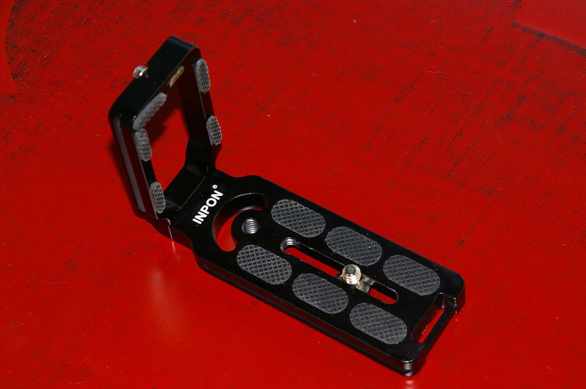
この L クランプをひっくり返すと下の写真のようになっています。
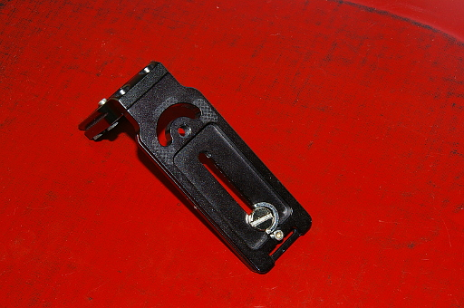
やはりこのネジをカメラの三脚ネジ穴に差し込んで、L プレートを下の写真のように固定します。
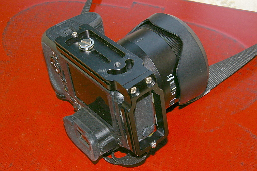
ネジの固定は、やはりドライバーを使ってしっかり固定することをお勧めします。なぜかはすぐにわかります。
それでカメラの上下をちゃんとした向きにすると下の写真のようになります。
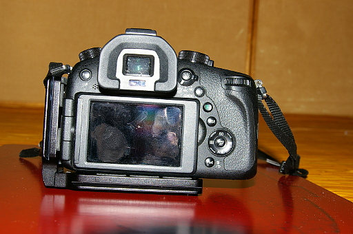
このように L プレートは原則的にカメラの底面と側面に接して固定することができます。
さてこのプレートのヨロコビポイントなんですが、まず最初に下のプレートがアルカスイス互換のプレートになっています。なのでアルカスイス互換の雲台がついた三脚や下の写真のようなアルカスイス互換の雲台にした三脚があれば
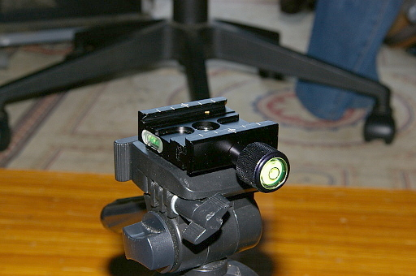
下の写真のようにアルカスイス互換三脚にカメラを設置することができるのですね。
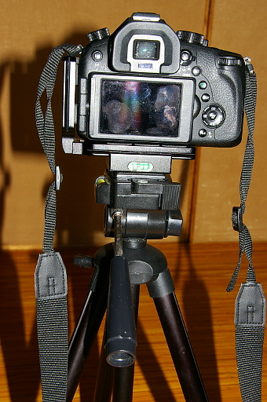
なんだそれでは前回紹介していた INPON アルカスイス互換クランプ用のプレートや他のアルカスイス互換プレートを買えば安く済むからそれでいいではないか、さらにはもし Another Dimension のカメラキャプチャクリップを購入していればアルカスイス互換のプレートが付属してきてるのだからそれが使えるではないかという声が聞こえてきそうです。
ですが実はこの L プレートは側面のプレートもアルカスイス互換なんです。つまりカメラを三脚に下の写真のように設置することもできるのです。
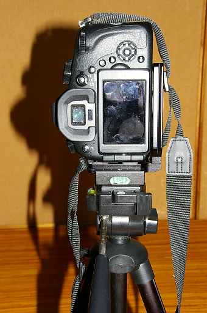
このカメラを横に向けたり縦に向けたりする作業を雲台をまったく操作することなく、クランプを緩めてカメラの向きを変えるだけでできちゃうのです。しかも水準器がついているクランプなら 1 度水平をとってしまえば、カメラの向きを横にしようが縦にしようが水平はとれたままです。それに対して雲台を操作してカメラの縦横を変える場合は、水準器をにらみながら時間をかけて水平をとる必要があります。効率が全然違います。
それだけではありません。上の 2 枚の写真を見てください。カメラの重心は常に三脚のセンターポールにあります。つまりカメラの向きを問わず三脚が安定するのです。いいことづくめじゃありませんか？
三脚さえアルカスイス互換であれば、この L プレートをカメラから外す必要性を感じません。ずっとつけっぱなしにしていれば、好きなときに好きな向きでカメラを三脚に取り付けることができるのです。前にドライバーで固定してしまうといいと書いたのはそのためです。
ですがこの汎用 L プレートに問題がないわけではありません。下の写真を見てください。
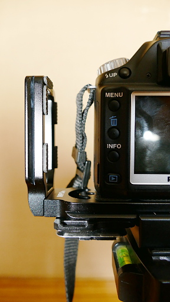
側面のプレートをカメラから離していますね。これは好きで離しているわけではありません。前述の山写さんの blog といい、この製品の amazon のページといい、側面のプレートはカメラボディーの側面にぴったりとくっついているのです。
ところが上の写真を見ればわかるように私のカメラ PENTAX *istD L2 だと、ネックストラップを取り付ける金具とサイドプレートの上部が干渉して、サイドプレートをカメラボディーにぴったりとくっつけることができないのですね。
これはサイドプレートを工具で削って、サイドプレートとカメラのボディーがピッタリとくっつくようにしないといけないのか？と思いました。
が実はどうもそうでもないみたいなんです。他社の L プレートの amazon のページを見ると、堂々とサイドプレートとカメラボディーの間に隙間を開けてるんですね。汎用の L プレートというものはそういうものなのかもしれません。
なのでカメラが横向きのときは普通に下の写真のように
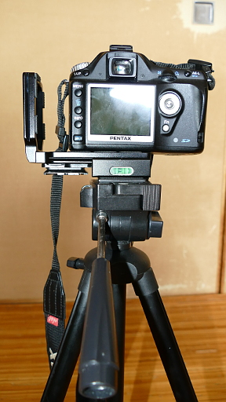
カメラを縦向きにするときは下の写真のように取り付けることにしました。
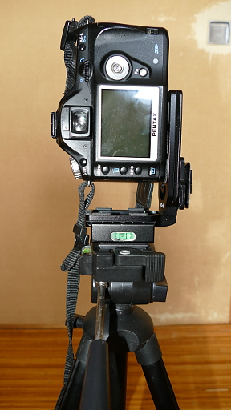
今の所問題はでていません。
なお弟所有の Canon EOS D7 のような大きなカメラではこのような干渉はおきませんでした。PENTAX *istD L2 が小さすぎるんですね。
それともう一つ。
下の写真をよく見てください。L プレートの下側のプレートの左隅にキャプチャークリップのプレートがくっついています。しかも三脚の雲台につけられたクランプとほぼ干渉していません。
つまり L プレートをカメラにつけたままキャプチャークリップのプレートを取り付けることができ、どちらも外すことなく下の写真のようにカメラをキャプチャークリップに取り付けたり外したり、三脚にも縦方向にも横方向にも取り付けるということもできるということなんですね。
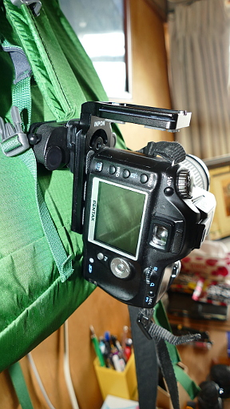
便利でしょう？
ただし国土地理院の地図などコンテンツの一部は除きます。